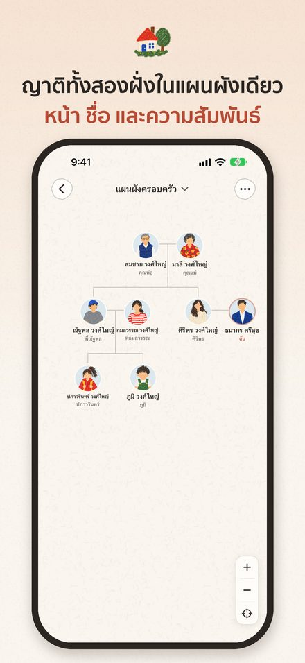
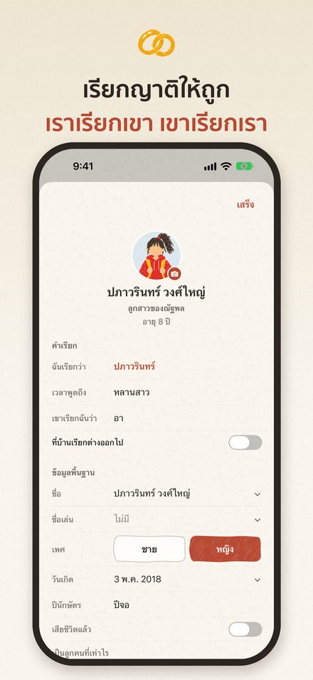
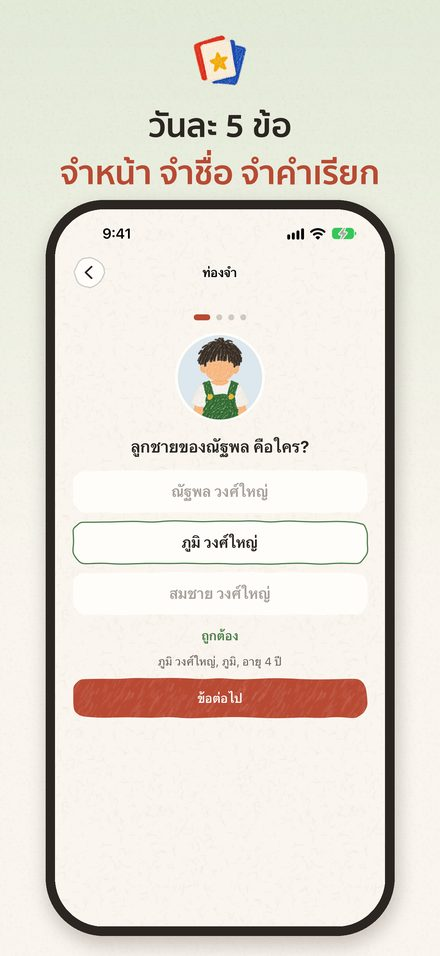
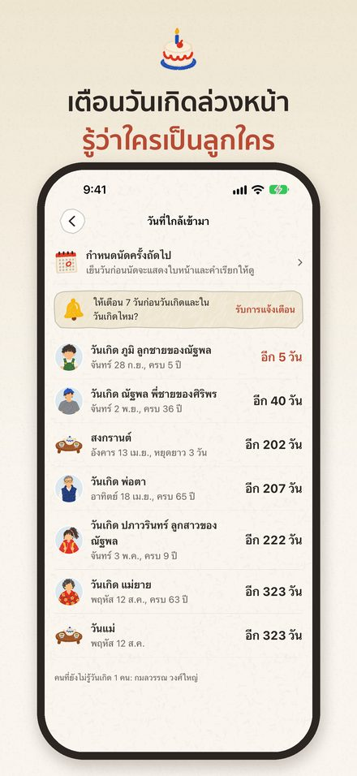

เรียกญาติ
รู้ว่าใครเป็นใครในครอบครัวใหม่
ก่อนไปบ้านแฟน งานแต่ง หรือรวมญาติช่วงสงกรานต์ ทบทวนหน้าตา ชื่อ และคำเรียกที่ถูกต้องของแต่ละคนได้ในหนึ่งนาที ตัวอักษรใหญ่และ VoiceOver ช่วยให้ผู้สูงอายุใช้ได้ง่าย
เร็ว ๆ นี้บน App Store



การแต่งงานคือการได้ครอบครัวใหม่มาทั้งครอบครัว และเรื่องที่ยากที่สุดคือการจำให้ได้ว่าใครเป็นใคร แอปเรียกญาติช่วยเก็บครอบครัวของแฟนไว้ในแผนผังเดียวที่เรียบง่ายและอบอุ่น ทั้งหน้าตา ชื่อ อายุ วันเกิด และคำที่ควรใช้เรียกแต่ละคน
 แผนผังครอบครัว
แผนผังครอบครัว
- แตะที่ใครก็ได้ เพื่อดูว่าเป็นอะไรกับคุณ และควรเรียกว่าอะไร
- เพิ่มพ่อแม่ พี่น้อง คู่ชีวิต และลูกได้ในแตะเดียว แล้วดูแผนผังค่อยๆ เติบโต
- ครอบครัวของคุณ ครอบครัวของแฟน เพื่อน และเพื่อนร่วมงาน แยกด้วยสีอ่อนๆ ดูง่าย
- คนที่จากไปแล้วยังอยู่ในแผนผังได้ ความผูกพันในครอบครัวจึงไม่ขาดหาย
 คำเรียกที่ถูกต้อง
คำเรียกที่ถูกต้อง
- แอปรู้ว่าแต่ละคนเป็นญาติฝั่งพ่อหรือฝั่งแม่ และแก่หรืออ่อนกว่าพ่อแม่ จึงบอกได้ถูกว่าควรเรียก ลุง ป้า น้า หรืออา: พี่ของพ่อแม่เรียกลุงหรือป้า น้องของพ่อเรียกอา น้องของแม่เรียกน้า
- ลูกพี่ลูกน้องนับพี่น้องตามลำดับของพ่อแม่ ไม่ใช่อายุของตัวเอง แอปจึงบอกได้ว่าควรเรียก "พี่" หรือ "น้อง"
- ดูแวบเดียวก็รู้ว่าใครเป็นใคร เช่น "ข้าวหอม ลูกสาวของพี่ต้น"
- รองรับคำเรียกญาติ 10 ภาษา และเลือกภาษาของคำเรียกแยกจากภาษาของแอปได้
- ถ้าที่บ้านเรียกต่างออกไป ก็ตั้งคำเรียกแบบของบ้านเองได้
 ไม่ใช่แค่จด แต่ช่วยให้จำได้
ไม่ใช่แค่จด แต่ช่วยให้จำได้
- ควิซวันละ 5 ข้อ ทบทวนหน้าตา ชื่อ และวันเกิด
- เย็นก่อนวันไปเยี่ยมครอบครัว เลื่อนดูทีละคนว่าจะได้เจอใครบ้าง
- แจ้งเตือนวันเกิดและวันครบรอบการจากไป
- เรื่องที่ยังไม่รู้จะรวมไว้ในรายการเดียว ส่งให้แฟนช่วยตอบได้ในครั้งเดียว
 ช่วยกันเติม
ช่วยกันเติม
- ชวนแฟนมาแก้ไขแผนผังเดียวกันได้ แต่ละคนเห็นคำเรียกตามมุมมองของตัวเอง
- การแก้ไขร่วมกันใช้ได้ระหว่าง iPhone ที่ใช้ iOS 26 ขึ้นไป การเปลี่ยนแปลงมักแสดงให้อีกฝ่ายเห็นภายในหนึ่งนาที
 ใช้ง่ายสำหรับทุกคน
ใช้ง่ายสำหรับทุกคน
- รองรับตัวอักษรขนาดใหญ่ โหมดมืด และ VoiceOver พร้อมปุ่มใหญ่และสีที่ตัดกันชัดเจน ปู่ย่าตายายก็ใช้ได้สบาย
- การเห็นหน้าตา ชื่อ และความเกี่ยวข้องไปพร้อมกัน อาจช่วยให้ผู้ที่มีปัญหาด้านความจำ และครอบครัวที่ดูแลพวกเขา จำญาติได้ง่ายขึ้น แอปนี้ไม่ใช่แอปทางการแพทย์ และไม่ได้ใช้วินิจฉัยหรือรักษาโรคหรืออาการใดๆ
 ความเป็นส่วนตัวมาก่อน
ความเป็นส่วนตัวมาก่อน
- ข้อมูลครอบครัวอยู่ในอุปกรณ์และ iCloud เท่านั้น ครอบครัวที่แก้ไขร่วมกันจะอยู่ใน iCloud ของผู้สร้าง ไม่มีโฆษณา ไม่มีการติดตาม
- การตรวจหาใบหน้าทำงานบนอุปกรณ์ และบันทึกไว้เฉพาะภาพใบหน้าที่ครอบตัดแล้ว
 เรียกญาติ Pro และ Plus
เรียกญาติ Pro และ Plus
- แผนผังครอบครัว คำเรียก แบบทดสอบ รูปภาพ วิดเจ็ต และการแก้ไขร่วมกันใช้ได้ฟรีทั้งหมด สูงสุด 10 คนต่อแผนผัง
- Pro ตลอดชีพ (ซื้อครั้งเดียว) หรือเรียกญาติ Plus (สมัครรับรายเดือนหรือรายปี) เปิดทุกฟีเจอร์: ไม่จำกัดจำนวนคน และผู้ช่วยเตรียมตัวสำหรับงานสำคัญ
- ผู้ช่วยเตรียมตัว: เมื่อใกล้สงกรานต์ วันแม่ วันเกิด วันรำลึก หรืองานรวมญาติ แอปจะรวบรวมตามครอบครัวของคุณ ทั้งคนที่จะพบและคำเรียก อาหารที่ทานไม่ได้ คำอวยพร และของที่ต้องเตรียม
- แพ็กเกจรายปีมีทดลองใช้ฟรี 1 สัปดาห์
- การสมัครรับจะเรียกเก็บเงินผ่านบัญชี Apple ของคุณ และต่ออายุโดยอัตโนมัติ เว้นแต่จะยกเลิกอย่างน้อย 24 ชั่วโมงก่อนสิ้นสุดรอบปัจจุบัน จัดการหรือยกเลิกได้ทุกเมื่อที่ การตั้งค่า > บัญชี Apple > การสมัครรับ